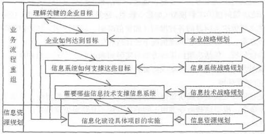
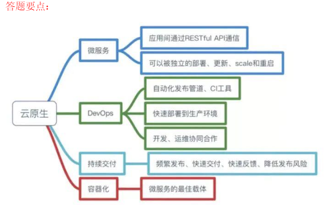

51CTO 论文集
共抓取题目：24 题
系统架构设计师——论文提交注意事项
1、在进行论文写作（电子版本）练习时，建议先在word上完成并保存好，然后将其复制粘贴至以下答案处；
2、进行单次提交论文内容时，论文篇数控制在一篇至两篇（不要连续提交，两篇放在一起，不然上一次提交的内容将会被覆盖）；
3、字体格式要求：宋体--五号；
4、论文题目范围：十大知识领域，建议大家针对十大知识领域练习一遍；
5、介于学员较多，且论文篇幅较长，讲师仔细审阅一篇论文需要十几分钟，建议在正式提交之前，请先进行自检自查，例如论文思路、结构等内容是否合理，自检通过后再进行论文提交，重复提交会更新提交时间，所以尽量一次提交成功，再耐心等候讲师批改完毕哦。
6、考虑到经常出现在一天内需要讲师进行批阅的论文高达几十篇，因此论文提交后，可能无法第一时间得到回复，讲师会尽量在48小时内进行批阅（节假日回复时间可能会顺延），敬请谅解。
7、请复制粘贴在答案空白处，不要以附件形式提交，不要以附件形式提交，不要以附件形式提交；
论文写作要点
一片完整的论文主要包含三个部分：摘要+正文+结尾；在字数限制的情况下，合理对内容进行合理分配，如下：
摘要——论文写作章节分布建议
摘要组成部分：项目背景+论文主题
摘要字数：300字（项目背景250字+论文主题50字）
项目背景组成部分：项目起止时间+项目投资+个人职责（建议以项目经理的角度进行论文写作）+项目甲乙双方（项目其他干系人——如有，例如设计单位、质量监督机构等）+项目建设任务+项目建设目标/目的+其他补充（结合字数限制自行控制）
论文主题组成部分：论文主题涉及某某知识领域+该领域具体管理过程+项目效果+业主评价
摘要字数上限：330字（含标点符号）
正文——论文写作章节分布建议
正文组成部分：项目背景+管理过程
正文字数：2500字（项目背景500字+论文主题2000字）
项目背景组成部分：项目起止时间+项目投资+个人职责（建议以项目经理的角度进行论文写作）+项目甲乙双方（项目其他干系人——如有，例如设计单位、质量监督机构等）+项目建设任务+项目建设目标/目的+其他补充（结合字数限制自行控制）
【正文---项目背景：在“摘要---项目背景”的基础上进一步细化、详细。】
管理过程组成部分：论文主题涉及某某知识领域+该领域具体管理过程
（举例：该知识领域一共涉及5个管理过程/步骤）---2000字
过程/步骤1：阐述该阶段工作主要依据、方法技术、成果---400字
过程/步骤2：同上---400字
过程/步骤3：同上---400字
过程/步骤4：同上---400字
过程/步骤5：同上---400字
结尾——论文写作章节分布建议
正结尾成部分：项目主要成果+个人目标
结尾字数：250字（项目主要成果200字+论文主题50字）
项目背景组成部分：项目起止时间+项目目前状态+项目建设主要成效+其他补充（结合字数限制自行控制）
个人目标：50字（自由发挥）
论文提交模板：
论文题目（居中 黑体加粗 2号字 ）
摘要
1、要求：首行缩进两字符，采用“宋体--5号”
2、段落行距：1.5倍
3、摘要字数：300字为最佳，字数上限：330字
正文
1、要求：首行缩进两字符，采用“宋体--5号”
2、段落行距：1.5倍
3、摘要字数：2400字为最佳，字数上限：2500字
结尾
1、要求：首行缩进两字符，采用“宋体--5号”
2、段落行距：1.5倍
3、摘要字数：200字为最佳，字数上限：250字
论文手写版：（请自行打印群文件里的论文答题纸，进行手写练习，再将清晰的照片复制或上传在此）
PS:不是二选一哦，文字和手写版要一起提交哦！
略
详见讲师评语
论企业应用系统的数据持久层架构设计
数据持久层(Data Persistence Layer)通常位于企业应用系统的业务逻辑层和数据源层之间，为整个项目提供一个高层、统一、安全、并发的数据持久机制，完成对各种数据进行持久化的编程工作，并为系统业务逻辑层提供服务。它能够使程序员避免手工编写访问数据源的方法，使其专注于业务逻辑的开发，并且能够在不同项目中重用本框架，这大大简化了数据的增加、删除、修改、查询功能的开发过程，同时又不丧失多层结构的天然优势，继承延续应用系统架构的可伸缩性和可扩展性。当运用关系型数据库作为数据存储机制时，在业务层与数据源间加入数据持久层，能够解决对象与关系的“阻抗不匹配”问题，将对象的状态持久化存储到关系型数据库中。
请围绕“企业应用系统的数据持久层架构设计”论题，依次从以下三方面进行论述。
1．概要叙述你参与分析和设计的企业应用系统开发项目以及你所担任的主要工作。
2．分析在企业应用系统的数据持久层架构设计中有哪些数据访问模式，并详细阐述每种数据访问模式的主要内容。
3．数据持久层架构设计的好坏决定着应用程序性能的优劣，请结合实际说明在数据持久层架构设计中需要考虑哪些问题。
1.简要描述所参与分析和设计的企业应用系统开发项目，并明确指出在其中承担的主要任务和开展的主要工作。
2．分析在企业应用系统的数据持久层架构设计中有哪些数据访问模式，并详细阐述每种数据访问模式的主要内容。
企业应用系统的数据持久层架构设计中主要有五种数据访问模式：
(1)在线访问(Online Access)。OA是最基本的数据访问模式，也是在实际开发过程中最常采用的。这种数据访问模式会占用一个数据库连接，读取数据，每个数据库操作都会通过这个连接不断地与后台的数据源进行交互。
(2)数据访问对象(Data Access Object)。DAO模式是标准的J2EE设计模式之一，开发人员常常用这种模式将底层数据访问操作与高层业务逻辑分离开。一个典型的DAO实现通常包括：一个DAO工程类；一个DAO接口；一个实现了DAO接口的具体类，包含访问特殊数据源中数据的逻辑；数据传输对象。
(3)数据传输对象(Data Transfer Object)。DTO是经典EJB设计模式之一，它本身是一组对象或者数据的容器，需要跨越不同的进程或者网络的边界来传输数据。对象本身应该不包含具体的业务逻辑，并且通常这些对象内部职能进行一些诸如内部一致性检查和基本验证之类的方法，而且这些方法最好不要再调用其他的对象行为。在具体实现DTO时，可以使用编程语言内置的集合对象，也可以通过创建自定义类来实现DTO对象。
(4)离线数据模型(Off-line Data Model)。ODM以数据为中心，数据从数据源获取之后，将按照某种预定义的结构存放在系统中，成为应用的中心。离线方式可以使得对数据的各种操作独立于各种与后台数据源之间的连接或者事务；通过与XML集成数据可以方便地与XML格式的文档之间相互转换；独立于数据源，ODM定义了数据的存储结构和规则。
(5)对象关系映射(Object Relational Mapping)。ORM是随着面向对象软件开发方法发展而产生的，面向对象开发方法是主流的开发方法，关系型数据库是企业级应用环境中永久存放数据的主流数据存储系统。对象和关系数据是业务实体的两种表现形式，业务实体在内存中表现为对象，在数据库中表现为关系数据。ORM一般以中间件的形式存在，能够帮助将应用程序中的数据转换成关系型数据库中的记录；或者将关系数据库中的记录转换成应用程序中便于操作的对象。
3．数据持久层架构设计的好坏决定着应用程序性能的优劣，无论在C/S，还是在B/S结构中，持久层在处理数据的同时，对服务器锁的类型和持续时间、输入输出活动量以及处理器负荷等产生主要影响，并由此影响应用程序的总体性能。在持久层设计阶段需要考虑的问题包括：网络流量问题；返回结果集的问题；查询或锁定超时的问题；应用程序开发工具的问题；使用游标的问题；应用层设计的问题等。
论企业信息化规划的实施与应用
企业信息化建设是一项长期而艰巨的任务，不可能在短时间内完成。信息化规划是企业信息化建设的纲领和向导，是信息系统设计和实施的前提和依据。信息化规划以整个企业的发展目标和战略、企业各部门的目标与功能为基础，同时结合行业信息化方面的实践和对信息技术发展趋势的掌握，制定出企业信息化远景、目标和发展战略，从而达到全面、系统地指导企业信息化建设的目的。
请围绕“企业信息化规划的实施与应用”论题，依次从以下三个方面进行论述。
1．概要叙述你参与的企业信息化规划项目以及你在其中所担任的主要工作。
2．简要叙述企业信息化规划的主要内容。结合你参与的项目的实际情况，详细分析有关企业的信息化规划目标及规划的具体内容。
3．说明你所参与实施的企业信息化规划的步骤及效果，介绍其是否达到了预期的目标并分析原因。
1．简要叙述所参与管理和开发的企业信息化规划项目，并明确指出在其中承担的主要任务和开展的主要工作。
2．企业信息化规划的内容
企业信息化规划不仅涉及到信息系统规划，同时与企业规划、业务流程建模等紧密相关，是融合企业战略、管理规划、业务流程重组等内容的“业务+管理+技术”的规划活动，如下图所示。

涉及到业务流程重组和信息资源规划、信息技术战略规划、信息系统战略规划和企业战略规划等多个领域。所有的规划都应该围绕企业关键目标的实现而展开，并为企业目标的实现提供支持和必须的服务。
进行信息化规划时，需要做好以下几个方面的工作：
(1)明确发展目标和实施重点。
(2)成立领导机构。
(3)做好企业业务信息化需求分析。
(4)确定企业信息化不同发展阶段的投资预算。
(5)制定必要的促进企业信息化建设的规章制度。
3．结合实际项目，详细阐述企业信息化规划的目标和实施重点，对于企业业务信息化需求分析应进行重点论述。说明企业信息化规划的实施过程，总结实施效果并进行进一步的分析。
论企业应用系统的分层架构风格
软件架构风格是描述一类特定应用领域中系统组织方式的惯用模式，反映了领域中诸多系统所共有的结构特征和语义特征，并指导如何将各个模块和子系统有效组织成一个完整的系统。分层架构是一种常见的软件架构风格，能够有效简化设计，使得设计的系统结构清晰，便于提高复用能力和产品维护能力。
由于大量企业应用系统都由界面呈现、业务逻辑、数据存储三类功能构成，因此广泛采用分层架构风格进行系统设计。
请围绕“企业应用系统的分层架构风格”论题，依次从以下三个方面进行论述。
1．概要叙述你参与管理和开发的企业应用系统建设项目以及你在其中所承担的主要工作。
2．请结合项目实际情况，指出应用系统都有哪些层次以及每个层次的主要功能。
3．请结合项目实际情况，指出设计每个层次时需要注意的问题及相应的解决方案。
| 字数统计 |
考生需要结合项目实际情况指出所开发的应用系统的总体架构，特别是架构的层次关系。分层架构设计是一种常见的架构设计方法，能够有效简化设计，使设计的系统结构清晰，便于提高复用能力和产品维护能力。一般来说，架构可以分为表现层、中间层和持久层三个层次。
(1)表现层。表现层主要负责接收用户的请求，对用户的输入、输出进行检查与控制，处理客户端的一些动作，包括控制页面跳转等，并向用户呈现最终的结果信息。表现层主要采用MVC结构来实现。控制器负责接收用户的请求，并决定应该调用哪个模型来处理；然后，模型根据用户请求调用中间层进行相应的业务逻辑处理，并返回数据；最后，控制器调用相应的视图来格式化模型返回的数据，并通过视图呈现给用户。
(2)中间层。中间层主要包括业务逻辑层组件、业务逻辑层工作流、业务逻辑层实体和业务逻辑层框架四个方面。业务逻辑层组件分为接口和实现类两个部分，接口用于定义业务逻辑组件，定义业务逻辑组件必须实现的方法。通常按模块来设计业务逻辑组件，每个模块设计为一个业务逻辑组件，并且每个业务逻辑组件以多个DAO组件作为基础，从而实现对外提供系统的业务逻辑服务。业务逻辑层工作流能够实现在多个参与者之间按照某种预定义的规则传递文档、信息或任务的过程自动进行，从而实现某个预期的业务目标，或者促进此目标的实现。业务逻辑层实体提供对业务数据及相关功能的状态编程访问，业务逻辑层实体数据可以使用具有复杂架构的数据来构建，这种数据通常来自数据库中的多个相关表。业务逻辑层实体数据可以作为业务过程的部分I/O参数传递，业务逻辑层的实体是可序列化的，以保持它们的当前状态。业务逻辑层是实现系统功能的核心组件，采用容器的形式，便于系统功能的开发、代码重用和管理。
(3)持久层。持久层主要负责数据的持久化存储，主要负责将业务数据存储在文件、数据库等持久化存储介质中。持久层的主要功能是为业务逻辑提供透明的数据访问、持久化、加载等能力。
考生需要结合项目实际情况，举例说明在表现层、中间层和持久层时需要考虑的主要问题。
论分布式存储系统架构设计
分布式存储系统(Distributed Storage System)通常将数据分散存储在多台独立的设备上。传统的网络存储系统采用集中的存储服务器存放所有数据，存储服务器成为系统性能的瓶颈，也是可靠性和安全性的焦点，不能满足大规模存储应用的需要。分布式存储系统采用可扩展的系统结构，利用多台存储服务器分担存储负荷，利用位置服务器定位存储信息，它不但提高了系统的可靠性、可用性和存取效率，还易于扩展。
请围绕“分布式存储系统架构设计”论题，依次从以下三个方面进行论述。
1．概要叙述你参与分析和开发的分布式存储系统项目以及你所承担的主要工作。
2．简要说明在分布式存储系统架构设计中所使用的分布式存储技术及其实现机制，详细叙述你在具体项目中选用了哪种分布式存储技术，说明其原因和实施效果。
3．冗余是提高分布式存储系统可靠性的主要方法，通常在分布式存储系统设计中可采用哪些冗余技术来提升系统的可靠性?你在具体项目中选用了哪种冗余技术?说明其原因和实施效果。
| 字数统计 |
在分布式存储系统架构设计中所使用的分布式存储技术主要包括四类：
集群存储技术。集群存储系统是指架构在一个可扩充服务器集群中的文件系统，用户不需要考虑文件是存储在集群中什么位置，仅仅需要使用统一的界面就可以访问文件资源。当负载增加时，只需在服务器集群中增加新的服务器就可以提高文件系统的性能。集群存储系统能够保留传统的文件存储系统的语义，增加了集群存储系统必须的机制，可以向用户提供高可靠性、高性能、可扩充的文件存储服务。
分布式文件系统。分布式文件系统是指文件系统管理的物理存储资源不一定直接连接在本地节点上，而是通过计算机网络与节点相连。分布式文件系统的设计基于客户机/服务器模式。一个典型的网络可能包括多个供多用户访问的服务器。另外，对等特性允许一些系统扮演客户机和服务器的双重角色。分布式文件系统以透明方式链接文件服务器和共享文件夹，然后将其映射到单个层次结构，以便可以从一个位置对其进行访问，而实际上数据却分布在不同的位置。用户不必再转至网络上的多个位置以查找所需的信息。
网络存储技术。网络存储系统就是将“存储”和“网络”结合起来，通过网络连接各存储设备，实现存储设备之间、存储设备和服务器之间的数据在网络上的高性能传输。为了充分利用资源，减少投资，存储作为构成计算机系统的主要架构之一，就不再仅仅担负附加设备的角色，逐步成为独立的系统。利用网络将此独立的系统和传统的用户设备连接，使其以高速、稳定的数据存储单元存在。用户可以方便地使用浏览器等客户端进行访问和管理。
P2P网络存储技术。P2P网络存储技术的应用使得内容不是存在几个主要的服务器上，而是存在所有用户的个人电脑上。这就为网络存储提供了可能性，可以将网络中的剩余存储空间利用起来，实现网络存储。人们对存储容量的需求是无止境的，提高存储能力的方法有更换能力更强的存储器，另外就是把多个存储器用某种方式连接在一起，实现网络并行存储。相对于现有的网络存储系统而言，应用P2P技术将会有更大的优势。P2P技术的主体就是网络中Peer，也就是各个客户机，数量是很大的，这些客户机的空闲存储空间是很多的，把这些空间利用起来实现网络存储。
冗余是提高分布式存储系统可靠性的主要方法，冗余的存储结构可以保证部分服务器失效时，数据服务仍可正常访问。常用的冗余技术包括：数据备份，数据分割，门限方案，纠错编码和纠删编码等。考生根据所参与的实际项目指出采用了何种冗余技术，并说明其原因和实施效果。
论云原生架构及其应用论题，依次从以下三个方面进行论述
1. 概要叙述你参与管理和开发的软件项目以及承担的主要工作
2. 服务化，强性，可观测任性和自动化是云原生架构重复的四类设计原则，请简要对这四类设计原则的内涵进行阐述。
3. 具体阐述你参与管理和开发的项目是如何向采用云原生架构的，并且围绕上述四类设计原则详细论述在项目设计与实现过程中遇到了哪些实际问题。是如何解决的
大纲：近年来，随着数字化转型不断深入，科技创新与业务不断融合，各行各业正在从大工业时代以容器和微服务架构为代表的云原生技术作为云计算服务的新模式已经逐渐成为企业持续发展的主流选择。
| 字数统计 |
略

围绕“论企业集成架构设计及应用”为题
1.概要叙述你参与的软件开发项目的及承担的主要工作
2.说详细说明三类企业集成架构设计技术分列要解决的问题及其含义，并阐述每种技术具体包含了哪些集成架构
3.根据你所参与的项目，说明用了哪些企业集成架构设计技术，其实施效果如何.
| 字数统计 |
略
答题要点：
（1）前端集成模式。
所谓前端集成模式，是指EAI侧重于业务应用系统表示层的集成，它主要通过单一的用户入口实现跨多个应用事务的运作。这种方式适合于用户启动的业务过程会产生多个跨应用的事务，而且这些事务都需要实时响应的情况（主要指B2C的环境）。另外，采用前端集成模式还可以实现对已经运行的核心业务应用系统增加功能或特征的目的。
（2）后端集成模式。
后端集成模式主要侧重于应用系统数据层面的集成。它通过专门的数据维护及转换工具实现不同应用或数据源之间的信息交换，维护企业整体业务数据的完整性和一致性。
后端集成模式就像一个方便多个应用系统之间数据自动交互的数据管道，后端集成模式的实施同样需要得到数据集成及应用集成的支持。后端集成模式实现起来相对比较简单，因为 EAI 服务器不需要跨应用的事务维护，而只需要维护一些相对简单的业务规则。基于EAl服务器提供的存储——转发机制可以方便地实现对合作伙伴企业之间大量业务数据交换（主要指B2B 集成）的支持。
（3）混合集成模式。
混合集成模式是前端集成模式和后端集成模式的组合。客户通过基于Web浏览器的客户端（瘦客户）实现对业务应用或EAI服务器的访问，服务请求可以由前端应用系统执行，也可以通过EAI服务器将服务请求路由到后端，由后端的业务应用来执行。这种模式几乎具有前端集成模式和后端集成模式的所有特征，主要应用于既需要响应大量服务请求、又需要维护多个数据源的完整性和一致性的情况。
试题三 论数据湖技术及其应用
近年来，随着移动互联网、物联网、工业互联网等技术的不断发展，企业级应用面临的数据规模不断增大，数据类型异常复杂。针对这一问题，业界提出“数据湖（Data Lake)”这一新型的企业数据管理技术。数据湖是一个存储企业各种原始数据的大型仓库，支持对任意规模的结构化、半结构化和非结构化数据进行集中式存储，数据按照原有结构进行存储，无须进行结构化处理；数据湖中的数据可供存取、处理、分析及传输，支撑大数据处理、实时分析、机器学习、数据可视化等多种应用，最终支持企业的智能决策过程。
请围绕“数据湖技术及其应用”论题，依次从以下三个方面进行论述。
1.概要叙述你所参与管理或开发的软件项目，以及你在其中所承担的主要工作。
2.详细阐述数据湖技术，并从主要数据来源、数据模式（Schema）转换时机、数据存储成本、数据质量、面对用户和主要支撑应用类型等5个方面详细论述数据湖技术与数据仓库技术的差异。
3.详细说明你所参与的软件开发项目中，如何采用数据湖技术进行企业数据管理，并说明具体实施过程及应用效果。
| 字数统计 |
【试题三：论数据湖技术及其应用】写作要点
1．简要叙述所参与的大数据或数据湖系统项目，并明确指出在其中承担的职务和主要工作。
2．分析并阐述数据湖技术：
1) 大数据的由来和表现。
2) 大数据5V特性
3) 大数据与数据仓库
4) 数据仓库的4个特性
3. 分析并阐述数据湖技术：
1) 数据仓库的缺点
2) 数据湖的技术特点
3) 数据湖的概念
4) 数据库的特性
4. 分析并对比数据湖(Data Lake, DL)与数据仓库(Data Warehouse, DW)
1) 数据来源
DW：从外部数据源获取
DL：既可从外部数据源获取，也可从外部应用或外部存储获取
1) 数据模式（Schema）转换时机
DW：采用ETL
DL：既支持ETL，也支持ELT
2) 数据存储成本
DW：通常采用ODS-DWD-DW-DM-ST五层架构，存储成本高
DL：通常采用原始数据和流计算，存储成本低
3) 数据质量
DW：依赖数据治理规范，ELT过程损失数据准确度和精度，质量较低
DL：存储原始数据，不损失数据准确度和精度，质量高
5) 面对用户和主要支撑应用类型
DW：联机分析(OLAP)和决策支持(DSS)
DL：物联网、人工智能和以智能制造、智慧城市等为代表的智能赋能应用
5．结合自身参与项目的实际状况，阐述数据湖技术在实际项目中的实施过程和应用效果。
试题二 论系统安全架构设计及其应用
随着社会信息化进程的加快，计算机及网络已经被各行各业广泛应用，信息安全问题也变得愈来愈重要。它具有机密性、完整性、可用性、可控性和不可抵赖性等特征。信息系统的安全保障是以风险和策略为基础，在信息系统的整个生命周期中提供包括技术、管理、人员和工程过程的整体安全，以保障信息的安全特征。
请围绕“系统安全架构设计及其应用”论题，依次从以下三个方面进行论述。
1.概要叙述你参与管理和开发的涉及安全架构设计的软件项目以及承担的主要工作。
2.请详细论述安全架构设计中鉴别框架和访问控制框架设计的内容，并论述鉴别和访问控制所面临的主要威胁有哪些，说明其危害。
3.请简要说明在你所参与项目的开发过程中，在鉴别框架和访问控制框架设计中存在的实际问题，以及是如何解决这些问题的。
| 字数统计 |
鉴别（Authentication）的基本目的，就是防止其他实体占用和独立操作被鉴别实体的身份。鉴别提供了实体声称其身份的保证，只有在主体和验证者的关系背景下，鉴别才是有意义的。鉴别有两种重要的关系背景：一是实体由申请者来代表，申请者与验证者之间存在着特定的通信关系（如实体鉴别）；二是实体为验证者提供数据项来源。
鉴别的方式主要基于以下5种。
（1）已知的，如一个秘密的口令。
（2）拥有的，如1C卡、令牌等。
（3）不改变的特性，如生物特征。
（4）相信可靠的第三方建立的鉴别（递推）。
（5）环境（如主机地址等）。
鉴别服务分为以下阶段：安装阶段；修改鉴别信息阶段；分发阶段；获取阶段；传送阶段；验证阶段；停活阶段；重新激活阶段；取消安装阶段。
在安装阶段，定义申请AI和验证AI.修改鉴别信息阶段，实体或管理者申请AI和验证AI变更（如修改口令）。在分发阶段，为了验证交换AI,把验证AI分发到各实体（如申请者或验证者）以供使用。在获取阶段，申请者或验证者可得到为鉴别实例生成特定交换AI所需的信息，通过与可信第三方进行交互或鉴别实体间的信息交换可得到交换AI.例如，当使用联机密钥分配中心时，申请者或验证者可从密钥分配中心得到一些信息，如鉴别证书。在传送阶段，在申请者与验证者之间传送交换AI.在验证阶段，用验证AI核对交换AI.在停活阶段，将建立一种状态，使得以前能被鉴别的实体暂时不能被鉴别。在重新激活阶段，使在停活阶段建立的状态将被终止。在取消安装阶段，实体从实体集合中被拆除。
访问控制（AccessControl)决定开放系统环境中允许使用哪些资源、在什么地方适 合阻止未授权访问的过程。在访问控制实例中，访问可以是对一个系统（即对一个系统 通信部分的一个实体）或对一个系统内部进行的。

基本访问控制功能示意图
ACI (访问控制信息）是用于访问控制目的的任何信息，其中包括上下文信息。AD1 (访问控制判决信息）是在做出一个特定的访问控制判决时可供ADF使用的部分（或全 部）ACI。ADF (访问控制判决功能）是一种特定功能，它通过对访问请求、ADI以及 该访问请求的上下文使用访问控制策略规则而做出访问控制判决。AEF (访问控制实施 功能）确保只有对目标允许的访问才由发起者执行。
涉及访问控制的有发起者、AEF、ADF和目标。发起者代表访问或试图访问目标的 人和基于计算机的实体。目标代表被试图访问或由发起者访问的，基于计算机或通信的 实体。例如，目标可能是OSI实体、文件或者系统。访问请求代表构成试图访问部分的 操作和操作数。
当发起者请求对目.标进行特殊访问时，AEF就通知ADF需要一个判决来做出决定。 为了作出判决，给ADF提供了访问请求（作为判决请求的一部分）和下列几种访问控 制判决信息（ADI)。
试题三 论企业集成平台的理解与应用
企业集成平台（Enterprise Imtcgation Plaform,EIP)是支特企业信息集成的像环境，其主要功能是为企业中的数据、系统和应用等多种对象的协同行提供各种公共服务及运行时的支撑环境。企业集成平台能够根据业务模型的变化快速地进行信息系统的配置和调整，保证不同系统、应用、服务或操作人员之同顺畅地相互操作，进而提高企业适应市场变化的能力，使企业能够在复杂多变的市场环境中生存。
请围绕“企业集成平台的理解与应用”论题，依次从以下三个方阅进行论述。
1.概要叙述你参与管理和开发的、采用企业集成平台进行企业信息集成的软件项目以及你在其中所承担的主要工作。
2.请给出至少4种企业集成平台应具有的基本功能，并对这4种功能的内涵进行简要阐述。
3.具体阐述你参与管理和开发的项目是如何使用企业集成平台进行企业信息集成的，并围绕上述4种功能，详细论述在集成过程中遇到了哪些实际问题，是如何解决的。
| 字数统计 |
无
集成平台是支持企业集成的支撑环境，包括硬件、软件、软件工具和系统，通过集成各种企业应用软件形成企业集成系统。由于硬件环境和应用软件的多样性，企业信息 系统的功能和环境都非常复杂，因此，为了能够较好地满足企业的应用需求，作为企业 集成系统支持环境的集成平台，其基本功能要如下。
（1）通信服务
提供分布环境下透明的同步/异步通信服务功能，使用户和应用程序无需关心具体的操作系统和应用程序所处的网络物理位置，而以透明的函数调用或对象服务方式完成 它们所需的通信服务要求。
（2）信息集成服务
为应用提供透明的信息访问服务，通过实现异种数据库系统之间数据的交换、互操 作、分布数据管理和共享信息模型定义（或共享信息数据库的建立)，使集成平台上运行 的应用、服务或用户端能够以一致的语义和接口实现对数据（数据库、数据文件、应用 交互信息）的访问与控制。
（3）应用集成服务
通过高层应用编程接口来实现对相应应用程序的访问，这砦高层应用编程接口包含 在不同的适配器或代理中，被用来连接不同的应用程序。这些接口以函数或对象服务的 方式向平台的组件模型提供信息，使用户在无需对原有系统进行修改（不会影响原有系 统的功能）的情况下，只要在原有系统的基础上加上相应的访问接口就可以将现有的、 用不同的技术实现的系统互联起来，通过为应用提供数据交换和访问操作，使各种不同 的系统能够相互协作。
（4）二次开发工具
是集成平台提供的一组帮助用户开发特定应用程序（如实现数据转换的适配器或应 用封装服务等）的支持工具，其目的是简化用户在企业集成平台实施过程中（特定应用 程序接口）的开发工作。
（5）平台运行管理工具
是企业集成平台的运行管理和控制模块，负责企业集成平台系统的静态和动态配 置、集成平台应用运行管理和维护、事件管理和出错管理等。通过命名服务、目录服务、 平台的动态静态配置，以及其中的关键数据的定期备份等功能来维护整个服务平台的系统配置及稳定运行。
1、在进行论文写作（电子版本）练习时，建议先在word上完成并保存好，然后将其复制粘贴至以下作答框；
2、提交论文内容时，下列论文题目二选一，论文篇数控制在一篇（不要一次性提交多篇）。若提交多篇仅批阅第一篇；
3、介于学员较多，且论文篇幅较长，讲师仔细审阅一篇论文需要十几分钟，建议在正式提交之前，请先进行自检自查，例如论文思路、结构等内容是否合理，自检通过后再进行论文提交，所以尽量准备好再提交，再耐心等候讲师批改完毕；
4、考虑到经常出现在一天内需要讲师进行批阅的论文高达几十篇，因此论文提交后，可能无法第一时间得到回复，讲师会尽量在24小时内进行批阅（节假日回复时间可能会顺延），敬请谅解；
5、请复制粘贴在答案空白处，不要以附件形式提交，不要以附件形式提交，不要以附件形式提交；
6、论文题目注意不要超过限定的120分钟做题时间，避免误操作导致提交空卷！
论文提交模板（直接在以下答题框作答，不要上传附件！！！提交附件不予批改！！！）：
论文题目（居中 ）
正文
首行缩进两字符，区分段落
字数：2500字左右
论文手写版（不作强制要求）：一定要将内容写在答题框里，再上传照片
PS：论文手写版主要用于老师检查字迹，附在答题框编辑好的论文内容后面即可，论文答题纸在“班内共享”里自行下载
试题一 论敏捷软件开发方法及其应用
敏捷软件开发又称敏捷开发，是一种从1990年代开始逐渐引起广泛关注的一些新型软件开发方法，是一种应对快速变化的需求的一种软件开发能力。相对于“非敏捷”，更强调程序员团队与业务专家之间的紧密协作、面对面的沟通（认为比书面的文档更有效）、频繁交付新的软件版本、紧凑而自我组织型的团队、能够很好地适应需求变化的代码编写和团队组织方法，也更注重软件开发中人的作用。
请围绕“论敏捷软件开发方法及其应用”论题，依次从以下三个方面进行论述。
1. 概要叙述你所参与管理或开发的软件项目，以及你在其中所承担的主要工作。
2. 叙述敏捷开发的特点。
3. 阐述你在软件开发过程中遇到的问题、解决方法以及取得的应用效果。
试题二 论分布式架构设计及其实现
相对于传统的集中式计算或集中式存储，分布式架构是将数据存储能力和计算能力分布到不同的服务器上，作为一个整体对外提供服务。分布式架构能解决集中式架构单点故障导致的服务中断，提高系统的可靠性和可用性，是互联网大厂普遍采用的一种架构模式。
请围绕“论分布式架构设计及其实现”论题，依次从以下三个方面进行论述。
1. 概要叙述你所参与管理或开发的软件项目，以及你在其中所承担的主要工作。
2. 阐述至少4种以上常见分布式技术，并对它们的内涵和适用范围进行简述。
3. 结合项目，具体阐述如何基于分布式架构进行软件设计和实现。
无
1、在进行论文写作（电子版本）练习时，建议先在word上完成并保存好，然后将其复制粘贴至以下作答框；
2、提交论文内容时，下列论文题目二选一，论文篇数控制在一篇（不要一次性提交多篇）。若提交多篇仅批阅第一篇；
3、介于学员较多，且论文篇幅较长，讲师仔细审阅一篇论文需要十几分钟，建议在正式提交之前，请先进行自检自查，例如论文思路、结构等内容是否合理，自检通过后再进行论文提交，所以尽量准备好再提交，再耐心等候讲师批改完毕；
4、考虑到经常出现在一天内需要讲师进行批阅的论文高达几十篇，因此论文提交后，可能无法第一时间得到回复，讲师会尽量在24小时内进行批阅（节假日回复时间可能会顺延），敬请谅解；
5、请复制粘贴在答案空白处，不要以附件形式提交，不要以附件形式提交，不要以附件形式提交；
6、论文题目注意不要超过限定的120分钟做题时间，避免误操作导致提交空卷！
论文提交模板（直接在以下答题框作答，不要上传附件！！！提交附件不予批改！！！）：
论文题目（居中 ）
正文
首行缩进两字符，区分段落
字数：2500字左右
论文手写版（不作强制要求）：一定要将内容写在答题框里，再上传照片
PS：论文手写版主要用于老师检查字迹，附在答题框编辑好的论文内容后面即可，论文答题纸在“班内共享”里自行下载
下午试题II 论文
试题一 论基于架构的软件设计方法及应用
基于架构的软件设计(Architecture-Based Software Design，ABSD.方法以构成软件架构的商业、质量和功能需求等要素来驱动整个软件开发过程。ABSD是一个自顶向下，递归细化的软件开发方法，它以软件系统功能的分解为基础，通过选择架构风格实现质量和商业需求，并强调在架构设计过程中使用软件架构模板。采用ABSD方法，设计活动可以从项目总体功能框架明确后就开始，因此该方法特别适用于开发一些不能预先决定所有需求的软件系统，如软件产品线系统或长生命周期系统等，也可为需求不能在短时间内明确的软件项目提供指导。
请围绕“基于架构的软件开发方法及应用”论题，依次从以下三个方面进行论述。
1．概要叙述你参与开发的、采用ABSD方法的软件项目以及你在其中所承担的主要工作。
2．结合项目实际，详细说明采用ABSD方法进行软件开发时，需要经历哪些开发阶段?每个阶段包括哪些主要活动?
3．阐述你在软件开发的过程中都遇到了哪些实际问题及解决方法。
试题二 论软件的高并发设计
随着互联网的蓬勃发展，互联网用户数量增长迅速，随着互联网Web2.0网站的兴起,传统系统设计在应对Web2.0网站，特别是超大规模和高并发的Web2.0纯动态SNS网站上已经显得力不从心，暴露了很多难以克服的问题。通过高并发的软件设计技术，可以保证系统能同时并行处理很多请求，有效地缓解以上问题，提供良好的业务服务能力。
请围绕“论软件的高并发设计”论题，依次从以下三个方面进行论述。
1．概要叙述你参与管理和开发的软件项目以及你在其中所担任的主要工作。
2．详细论述常见的高并发设计技术及其所包含的主要内容，并说明各自的主要适用场景。
3．结合你具体参与管理和开发的实际项目，说明具体采用哪些高并发设计技术并说明设计过程及其应用效果。
详见老师评语
详见老师评语
论文提交注意事项：
1、在进行论文写作（电子版本）练习时，建议先在word上完成并保存好，然后将其复制粘贴至以下作答框；
2、提交论文内容时，论文篇数控制在一篇（不要一次性提交多篇）。若提交多篇仅批阅第一篇；
3、介于学员较多，且论文篇幅较长，讲师仔细审阅一篇论文需要十几分钟，建议在正式提交之前，请先进行自检自查，例如论文思路、结构等内容是否合理，自检通过后再进行论文提交，所以尽量准备好再提交，再耐心等候讲师批改完毕；
4、考虑到经常出现在一天内需要讲师进行批阅的论文高达几十篇，因此论文提交后，可能无法第一时间得到回复，讲师会尽量在48小时内进行批阅（节假日回复时间可能会顺延），敬请谅解；
5、请复制粘贴在答案空白处，不要以附件形式提交，不要以附件形式提交，不要以附件形式提交；
论文提交模板（直接在以下答题框作答，不要上传附件！！！提交附件不予批改！！！）：
论文题目（居中 ）
正文
首行缩进两字符，区分段落
字数：2500字左右
题目一：信息系统安全体系设计
信息安全是指保护信息系统、信息资源和信息用户的安全，防止信息被窃取、篡改、破坏或丢失的一系列措施和技术。信息安全的重要性在当今数字化时代变得越来越突出，随着信息技术的快速发展，信息安全问题日益严重，已经成为社会发展和经济发展的重要因素。当前，信息安全的现状已经呈现出安全威胁日益复杂，安全防护手段相对薄弱，安全意识需要加强，信息安全标准亟待完善，网络空间安全治理需要加强几个方面的特点。信息安全面临着严峻的挑战，需要采取综合的措施来保障信息系统的安全，加强安全防护技术研究和开发，提高用户安全意识，完善信息安全标准体系，加强网络空间安全治理，维护信息安全和网络空间的和平与稳定。
请围绕“信息系统安全体系设计”论题，依次从以下三个方面进行论述。
1.概要叙述你参与管理和开发的软件项目以及你在其中承担的主要工作，并阐述软件系统安全架构原因。
2.请阐述信息安全体系架构的分析和设计包含哪些方面。
3.请结合项目实际，具体阐述你在项目中设计实践，具体运用了哪些实现手段。
题目二：论软件开发模型及应用
软件开发模型（Software Development Model）是指软件开发全部过程、活动和任务的结构框架。软件开发过程包括需求、设计、编码和测试等阶段，有时也包括维护阶段。软件开发模型能清晰、直观地表达软件开发全过程，明确规定了要完成的主要任务和活动，用来作为软件项目工作的基础。对于不同的软件项目，针对应用需求、项目复杂程度、规模等不同要求，可以采用不同的开发模型，并采用相应的人员组织策略、管理方法、工具和环境。
请围绕“软件开发模型及应用”论题，依次从以下三个方面进行论述。
1．简要叙述你参与的软件开发项目以及你所承担的主要工作。
2．列举你的项目使用的软件开发模型，并概要论述它（或它们）的特点。
3．根据你所参与的项目中使用的软件开发模型，具体阐述使用方法和实施效果。
无
无，可参考论文范文
论文提交注意事项：
1、在进行论文写作（电子版本）练习时，建议先在word上完成并保存好，然后将其复制粘贴至以下作答框；
2、提交论文内容时，论文篇数控制在一篇（不要一次性提交多篇）。若提交多篇仅批阅第一篇；
3、介于学员较多，且论文篇幅较长，讲师仔细审阅一篇论文需要十几分钟，建议在正式提交之前，请先进行自检自查，例如论文思路、结构等内容是否合理，自检通过后再进行论文提交，所以尽量准备好再提交，再耐心等候讲师批改完毕；
4、考虑到经常出现在一天内需要讲师进行批阅的论文高达几十篇，因此论文提交后，可能无法第一时间得到回复，讲师会尽量在48小时内进行批阅（节假日回复时间可能会顺延），敬请谅解；
5、请复制粘贴在答案空白处，不要以附件形式提交，不要以附件形式提交，不要以附件形式提交；
论文提交模板（直接在以下答题框作答，不要上传附件！！！提交附件不予批改！！！）：
论文题目（居中 ）
正文
首行缩进两字符，区分段落
字数：2500字左右
试题一： 论软件体系结构的演化
软件体系结构的演化是在构件开发过程中或软件开发完毕投入运行后，由于用户需求发生变化，就必须相应地修改原有软件体系结构，以满足新的变化的软件需求的过程。体系结构的演化是一个复杂的、难以管理的问题。
请围绕“论软件体系结构的演化”论题，依次从以下三个方面进行论述。
1.概要叙述你参与管理和开发的软件项目以及你在其中所承担的主要工作。
2.简要论述软件体系结构演化的常见原则有哪些（3-5个），请介绍其概念和理论。
3.具体阐述你参与管理和开发的项目是如何应用这些原则的，应用的效果如何。
试题二： 论基于架构的软件设计方法（ABSD）及应用
基于架构的软件设计（Architecture-Based Software Design, ABSD）方法以构成软件架构的商业、质量和功能需求等要素来驱动整个软件开发过程。ABSD是一个自顶向下，递归细化的软件开发方法，它以软件系统功能的分解为基础，通过选择架构风格实现质量和商业需求，并强调在架构设计过程中使用软件架构模板。采用ABSD方法，设计活动可以从项目总体功能框架明确后就开始，因此该方法特别适用于开发一些不能预先决定所有需求的软件系统，如软件产品线系统或长生命周期系统等，也可为需求不能在短时间内明确的软件项目提供指导。
请围绕“基于架构的软件开发方法及应用”论题，依次从以下三个方面进行论述。
1、概要叙述你参与开发的、采用ABSD方法的软件项目以及你在其中所承担的主要工作。
2、结合项目实际，详细说明采用ABSD方法进行软件开发时，需要经历哪些开发阶段？每个阶段包括哪些主要活动？
3、阐述你在软件开发的过程中都遇到了哪些实际问题及解决方法。
请认真查看页面最上方的评语，右侧的段落批注！
范文在学习网站-资料-班内共享
请认真查看页面最上方的评语，右侧的段落批注！
范文在学习网站-资料-班内共享
论文提交注意事项：
1、在进行论文写作（电子版本）练习时，建议先在word上完成并保存好，然后将其复制粘贴至以下作答框；
2、提交论文内容时，论文篇数控制在一篇（不要一次性提交多篇）。若提交多篇仅批阅第一篇；
3、介于学员较多，且论文篇幅较长，讲师仔细审阅一篇论文需要十几分钟，建议在正式提交之前，请先进行自检自查，例如论文思路、结构等内容是否合理，自检通过后再进行论文提交，所以尽量准备好再提交，再耐心等候讲师批改完毕；
4、考虑到经常出现在一天内需要讲师进行批阅的论文高达几十篇，因此论文提交后，可能无法第一时间得到回复，讲师会尽量在3个工作日内进行批阅（节假日回复时间可能会顺延），敬请谅解；
5、请复制粘贴在答案空白处，不要以附件形式提交，不要以附件形式提交，不要以附件形式提交；
论文提交模板（直接在以下答题框作答，不要上传附件！！！提交附件不予批改！！！）：
论文题目（居中 ）
正文
首行缩进两字符，区分段落
字数：2500字左右
ps：论文框架、论文考纲知识点、论文范文均在 pc端学习网站-资料-班内共享里下载哦！
试题一论特定领域软件架构
特定领域软件架构DSSA (Domain Specific Software Architecture）就是在一个特定应用领域中为一组应用提供组织结构参考的标准软件体系结构。对DSSA 研究的角度、关心的问题不同导致了对DSSA 的不同定义。DSSA 的必备特征如下。
l 一个严格定义的问题域和问题解域。
l 具有普遍性，使其可以用于领域中某个特定应用的开发。
l 对整个领域的构件组织模型的恰当抽象。
l 具备该领域固定的、典型的在开发过程中可重用元素。
请围绕“特定领域软件架构”论题，依次从以下三个方面进行论述。
① 概要叙述你所参与管理或开发的软件项目，以及你在其中所承担的主要工作。
② 说明DSSA包括哪几个阶段的活动以及参与人员有哪些。
③ 结合②详细说明你所参与的特定领域软件开发项目是如何进行架构设计的，给出每个阶段具体的实践过程。
试题二 论软件架构脆弱性分析
软件脆弱性包括了软件设计脆弱性和软件结构脆弱性，软件架构的脆弱性是结构脆弱性的 一种。确切地说，软件架构设计存在一些明显的或者隐含的缺陷，攻击者就可以利用这些缺陷 攻击系统，或者当受到某个或某些外部刺激时，系统会发生性能、稳定性、可靠性、安全性下降等。软件架构脆弱性通常与软件架构的风格和模式有关，不同风格和模式的软件架构，其脆弱性体现和特点有很大不同，且解决脆弱性问题需要考虑的因素和采取的措施也有很大不同。
请围绕“软件架构脆弱性分析”论题，依次从以下三个方面进行论述。
① 概要叙述你所参与管理或开发的软件项目，以及你在其中所承担的主要工作。
② 阐述典型架构风格的脆弱性。
③详细说明你所参与的软件开发项目中，使用的架构风格是如何解决脆弱性问题的。
试题三 论软件过程模型及应用
软件要经历从需求分析、软件设计、软件开发、运行维护，直至被淘汰这样的全过程，这个全过程称为软件的生命周期。软件生命周期描述了软件从生到死的全过程。为了使软件生命周期中的各项任务能够有序地按照规程进行，需要一定的工作模型对各项任务给予规程约束，这样的工作模型被称为软件过程模型，有时也称之为软件生命周期模型。
请围绕“软件过程模型及应用”论题，依次从以下三个方面进行论述。
① 简要叙述所参与开发的软件项目，并明确指出在其中承担的主要任务和开展的主要工作。
② 叙述说明目前常见的软件过程模型有哪些，它们的特点是什么。
③ 你的项目采用了哪个（些）软件过程模型进行软件开发的，给出具体的实施过程。
评语请在电脑端 学习网页中查看！
评语请在电脑端 学习网页中查看！
论文提交注意事项：
1、在进行论文写作（电子版本）练习时，建议先在word上完成并保存好，然后将其复制粘贴至以下作答框；
2、提交论文内容时，论文篇数控制在一篇（不要一次性提交多篇）。若提交多篇仅批阅第一篇；
3、介于学员较多，且论文篇幅较长，讲师仔细审阅一篇论文需要十几分钟，建议在正式提交之前，请先进行自检自查，例如论文思路、结构等内容是否合理，自检通过后再进行论文提交，所以尽量准备好再提交，再耐心等候讲师批改完毕；
4、考虑到经常出现在一天内需要讲师进行批阅的论文高达几十篇，因此论文提交后，可能无法第一时间得到回复，讲师会尽量在3个工作日内进行批阅（节假日回复时间可能会顺延），敬请谅解；
5、请复制粘贴在答案空白处，直接在以下答题框作答，不要以附件形式提交，不要以附件形式提交，不要以附件形式提交；
ps：论文框架、论文考纲知识点、论文范文均在 pc端学习网站-资料-班内共享里下载哦！
试题一 论云原生架构设计及应用
“云原生”来自于Cloud Native 的直译，拆开来看，Cloud 就是指其应用软件是在云端而非传统的数据中心。Native 代表应用软件从一开始就是基于云环境、专门为云端特性而设计，可充分利用和发挥云平台的弹性＋分布式优势，最大化释放云计算生产力。从技术的角度，云原生架构是基于云原生技术的一组架构原则和设计模式的集合，旨在将云应用中的非业务代码部分进行最大化的剥离，从而让云设施接管应用中原有的大量非功能特性（如弹性、韧性、安全、可观测性、灰度等），使业务不再有非功能性业务中断困扰的同时，具备轻量、敏捷、高度自动化的特点。
请围绕“论云原生架构设计”论题，依次从以下三个方面进行论述。
1、概要叙述你参与开发的软件项目以及你在其中所承担的主要工作。
2、详细说明云原生的主要架构模式有哪些。
3、结合项目实际，详细说明你采用了哪些架构模式进行云原生架构设计的。
试题二 论软件架构复用
软件架构复用可以减少开发工作、减少开发时间以及降低开发成本，提高生产力。不仅如此，它还可以提高产品质量使其具有更好的互操作性。同时，软件架构复用会使产品维护变得更加简单。
请围绕“论软件架构复用”论题，依次从以下三个方面进行论述。
1、概要叙述你参与开发的软件项目以及你在其中所承担的主要工作。
2、说明软件架构复用的基本过程。
3、结合项目实际，详细说明你是如何采用软件架构复用的方式形成最终系统的。
试题三 论软件体系结构的演化
软件体系结构的演化是在构件开发过程中或软件开发完毕投入运行后，由于用户需求发生变化，就必须相应地修改原有软件体系结构，以满足新的变化的软件需求的过程。体系结构的演化是一个复杂的、难以管理的问题。
请围绕“论软件体系结构的演化”论题，依次从以下三个方面进行论述。
① 概要叙述你参与管理和开发的软件项目以及你在其中所承担的主要工作。
② 简要论述软件体系结构演化的常见原则有哪些（3-5个），请介绍其概念和理论。
③ 具体阐述你参与管理和开发的项目是如何应用这些原则的，应用的效果如何。
试题四 论分布式数据库技术及应用
随着经济的高速发展，企业的用户数量、数据量呈爆炸式増长，对数据库管理提出了严峻的考验。数据库系统是大多数商业信息系统的核心，因此除了业务逻辑之外，企业对数据库系统的系统性能、数据可靠性和服务可用性都提出了较高要求。为满足企业用户的实际需求，近年来分布式数据库技术岀现了飞速发展。业务在实现信息系统时，需要根据数据管理的实际需求，选择合适的分布式数据库产品。
请围绕“论分布式数据库技术及应用”论题，依次从以下三个方面进行论述。
1. 概要叙述你参与实施的软件项目以及你在其中所担任的主要工作。
2. 请说明你所参与的软件项目对数据管理的需求，结合分布式数据库的特点，论述你是如何应用分布式数据库或设计分布式数据库的。
3. 简要说明分布式数据库的应用效果及存在的问题。
老师评语请在 电脑端(pc端)查看！
老师评语请在 电脑端(pc端)查看！
试题一论云原生微服务
在云原生时代，云原生微服务体系将充分利用云资源的高可用和安全体系，让应用获得更有保障的弹性、可用性与安全性。应用构建在云所提供的基础设施与基础服务之上，充分利用云服务所带来的便捷性、稳定性，降低应用架构的复杂度。云原生的微服务体系也将帮助应用架构全面升级，让应用天然具有更好的可观测性、可控制性、可容错性等特性。
请围绕“论云原生微服务”论题，依次从以下三个方面进行论述。
1、概要叙述你参与开发的软件项目以及你在其中所承担的主要工作。
2、设计一个优秀的微服务系统应遵循一定的设计约束。详细说明微服务的设计约束有哪些。
3、结合项目实际，详细说明你的项目采用了哪些微服务技术实现上述设计约束的。
试题二 论面向对象的设计方法及应用
面向对象（Object-Oriented , OO）开发方法将面向对象的思想应用于软件开发过程中，指导开发活动，是建立在“对象”概念基础上的方法学。面向对象方法的本质是主张参照人们认识一个现实系统的方法，完成分析、设计与实现一个软件系统，提倡用人类在现实生活中常用的思维方法来认识和理解描述客观事物，强调最终建立的系统能映射问题域，使得系统中的对象，以及对象之间的关系能够如实地反映问题域中固有的事物及其关系。面向对象的方法主要分为面向对象的分析、面向对象的设计、面向对象的程序设计三个部分。
请围绕“论面向对象的设计方法及应用”论题，依次从以下三个方面进行论述。
① 简要叙述所参与管理和开发的软件项目，并明确指出在其中承担的主要任务和开展的主要工作。
② 说明面向对象的设计过程可以分为哪几个步骤？
③ 结合②说明你是如何进行面向对象的设计工作的，写出具体实践过程。
试题三 论信息系统的安全与保密设计
信息安全是指保护信息系统、信息资源和信息用户的安全，防止信息被窃取、篡改、破坏或丢失的一系列措施和技术。信息安全的重要性在当今数字化时代变得越来越突出，随着信息技术的快速发展，信息安全问题日益严重，已经成为社会发展和经济发展的重要因素。当前，信息安全的现状已经呈现出安全威胁日益复杂，安全防护手段相对薄弱，安全意识需要加强，信息安全标准亟待完善，网络空间安全治理需要加强几个方面的特点。信息安全面临着严峻的挑战，需要采取综合的措施来保障信息系统的安全，加强安全防护技术研究和开发，提高用户安全意识，完善信息安全标准体系，加强网络空间安全治理，维护信息安全和网络空间的和平与稳定。
请围绕“论信息系统的安全与保密设计”论题，依次从以下三个方面进行论述。
① 概要叙述你参与管理和开发的软件项目以及你在其中承担的主要工作，并阐述软件系统安全架构原因。
② 请结合项目实际，具体阐述你在项目中设计实践，具体运用了哪些安全性和保密性的手段。
③ 请结合项目实际，说明你在实践中遇到的问题以及解决方案。
试题四 论分布式设计
分布式是指将一个系统或任务分解成多个子部分，并在多个计算机或服务器之间进行协同工作的方式。每个子部分都可以在不同的计算机节点上运行，彼此之间通过网络进行通信和协调。分布式技术在当今互联网应用中起着重要作用，例如大规模搜索引擎、社交网络和电子商务平台等。常见的分布式系统包括分布式数据库、分布式存储系统、分布式计算系统等。这些系统通过将数据、计算和功能分散到多个节点上，可以提供更高的性能、可伸缩性和容错性。分布式系统的设计和实现需要解决一系列挑战，例如节点之间的通信和同步、数据一致性的维护、负载均衡、故障恢复等。为了解决这些挑战，通常会使用一些分布式算法和协议，如一致性哈希、Paxos、Raft等。
请围绕“论分布式设计与实现”论题，依次从以下三个方面进行论述。
① 概要叙述你参与管理和开发的软件项目以及你在其中承担的主要工作。
② 请阐述你参与的项目使用了哪些分布式技术，它们的特点是什么？
③ 请结合项目实际，具体阐述你在项目中分布式技术的实践，以及在实施过程中遇到的问题及解决方案。
论文一：大数据lamda架构
1简要说明你参与开发的软件项目，以及你所承担的主要工作
2 lamada体系架构将数据流分为批处理层(Batch Layer)、加速层(Speed Layer)、服务层（Serving Layer）。简要叙述这三个层次的用途和特点
3 详细阐述你参与开发的软件项目是如何基于lamada体系架构进行大数据处理的
论文二 模型驱动架构设计方法及其应用
1简要说明你参与分析和开发的软件项目，以及你所承担的主要工作
2 简要阐述采用模型驱动架构思想进行软件开发的全过程和特点
3详细阐述你参与开发的软件项目是基于模型驱动架构进行分析、设计和开发的。
论文三 单元测试方法及其运用
1 概要叙述你参与管理和开发的软件项目，以及你所承担的主要工作
2 结合你参与管理和开发的软件项目，简要叙述单元测试中静态测试和动态测试方法的基本内容
3 结合你参与管理和开发的软件项目，具体阐述在单元测试过程中，如何确定白盒测试的覆盖标准，以及如何组织实施回归测试
论文四 云上自动化运维及其应用
1简要说明你参与开发的软件项目，以及你所承担的主要工作
2概要叙述云上自动化运维(如CloudOps)的主要衡量指标
3详细描述你参与开发的项目如何实现云上自动化运维。
| 字数统计 |
1、论nosql数据库
随着互联网Web 2.0网站的兴起，传统关系数据库在应对Web 2.0网站，特别是超大规模和高并发的Web 2.0纯动态SNS网站上已经显得力不从心，暴露了很多难以克服的问题，而非关系型的数据库则由于其本身的特点得到了非常迅速的发展。NoSQL(Not only SQL)的产生就是为了解决大规模数据集合及多种数据类型带来的挑战，尤其是大数据应用难题。目前NoSQL数据库并没有一个统一的架构，根据其所采用的数据模型可以分为四类：键值(Key-Value)存储数据库、列存储数据库、文档型数据库和图(Graph)数据库。
请围绕“论NoSQL数据库技术及其应用”论题，依次从以下三个方面进行论述。
1.概要叙述你参与管理和开发的软件项目以及你在其中所担任的主要工作。
2.详细论述常见的NoSQL数据库及主要特点。
3.结合你具体参与管理和开发的实际项目，说明具体采用哪种NoSQL数据库技术以及其应用效果。
2、论大数据架构的应用
大数据指的是所涉及的资料量规模巨大，无法透过主流软件工具在合理时间内达到撷取、
管理、处理、并整理成为帮助企业经营决策更积极目的的资讯。目前大数据的应用已经渗透到各个行业领域，通过大数据分析，企业可以洞察消费者行为，优化产品设计和服务，提高运营效率，降低成本，从而实现精准营销和个性化服务。
请围绕“大数据架构的应用”论题，依次从以下三个方面进行论述。
1、简要说明那你参与管理和开发的软件项目，以及你所承担的主要工作
2、结合你参与管理和开发的软件项目，简要说明大数据有哪些架构和它们的特点
3、结合你参与管理和开发的项目，具体阐述你采用哪种大数据的架构以及是如何应用大数据架构进行系统开发的
3、论软件架构脆弱性分析
软件脆弱性包括了软件设计脆弱性和软件结构脆弱性，软件架构的脆弱性是结构脆弱性的 一种。确切地说，软件架构设计存在一些明显的或者隐含的缺陷，攻击者就可以利用这些缺陷 攻击系统，或者当受到某个或某些外部刺激时，系统会发生性能、稳定性、可靠性、安全性下降等。软件架构脆弱性通常与软件架构的风格和模式有关，不同风格和模式的软件架构，其脆弱性体现和特点有很大不同，且解决脆弱性问题需要考虑的因素和采取的措施也有很大不同。
请围绕“软件架构脆弱性分析”论题，依次从以下三个方面进行论述。
1、概要叙述你所参与管理或开发的软件项目，以及你在其中所承担的主要工作。
2、阐述典型架构风格的脆弱性。
3、详细说明你所参与的软件开发项目中，使用的架构风格是如何解决脆弱性问题的。
4、特定领域架构
特定领域软件架构DSSA (Domain Specific Software Architecture）就是在一个特定应用领域中为一组应用提供组织结构参考的标准软件体系结构。对DSSA 研究的角度、关心的问题不同导致了对DSSA 的不同定义。DSSA 的必备特征如下。
l l一个严格定义的问题域和问题解域。
l l具有普遍性，使其可以用于领域中某个特定应用的开发。
l l对整个领域的构件组织模型的恰当抽象。
l l具备该领域固定的、典型的在开发过程中可重用元素。
请围绕“特定领域软件架构”论题，依次从以下三个方面进行论述。
1、概要叙述你所参与管理或开发的软件项目，以及你在其中所承担的主要工作。
2、说明DSSA包括哪几个阶段的活动以及参与人员有哪些。
3、结合②详细说明你所参与的特定领域软件开发项目是如何进行架构设计的，给出每个阶段具体的实践过程。
论文提交规则，请仔细阅读！以免浪费提交次数！
①论文四选一，选择一个题目进行写作即可
②有【5次】提交机会！点击“交卷”或超时自动提交，则消耗一次提交机会，直接将页面杀掉是不会消耗提交机会的。点击“交卷”后无法撤回
③每次作答限时120分钟，超时自动交卷，无法撤回
④老师们会尽量在3个工作日内批阅完成，评语请在【电脑端】查看，aPP中无法查看评语。注意！老师未批改，页面会显示“不及格“，此时不要重复点击提交！请耐心等待批改，批改完成会显示分数和评语，再根据评语修改论文后，进行提交
⑤学习网站-资料-班内共享，有论文范文、论文框架、论文考纲可以自行下载
⑥请不要提交附件或文档，直接在答题框内用文字作答，或把文字粘贴到答题框内，提交附件文档无效！
1、论大模型驱动的软件工程架构及其应用
随着大模型（Large Language Model, LLM）在自然语言处理、代码生成和智能决策等方面的突破，软件工程正迎来新一轮范式变革。传统软件开发流程以“需求—设计—编码—测试—运维”为主线，强调明确分工与流程驱动。然而在大模型驱动的软件工程3.0时代，AI 已不仅是工具，而是成为贯穿全流程的“智能协作伙伴”。它能够通过自然语言交互辅助需求挖掘，自动生成和优化代码，智能化生成测试用例，并在部署和运维中实现自愈与预测。由此形成的新型软件工程架构，打破了传统开发中的角色边界与流程壁垒，推动软件开发进入“人机协同”的智能化阶段。大模型驱动的软件工程架构，不仅提升了开发效率和软件质量，还对团队协作、人才结构、工具链生态等带来深远影响。
请围绕“论大模型驱动的软件工程架构及其应用”论题，依次从以下三个方面进行论述：
1. 概要叙述你参与开发或管理的软件项目，以及你在其中所承担的主要工作。
2. 概要说明大模型驱动的软件工程架构的主要特点。
3. 具体阐述你参与的项目是如何基于大模型驱动的软件工程架构进行设计与实现的。
2、论AI驱动的智能运维架构及其应用
随着软件系统规模的不断扩大和云计算、微服务架构的普及，运维工作正面临着复杂度高、变化快、实时性要求强等挑战。传统的人工运维方式往往存在效率低、响应慢、容易出错等问题，而 DevOps 的兴起虽然在一定程度上打通了开发与运维的壁垒，但依然需要进一步提升智能化水平。在这一背景下，AI 驱动的智能运维（AIOps）逐渐成为新的发展方向。智能运维架构通过引入机器学习、大模型、智能决策算法，对运维数据进行采集、分析和预测，实现异常检测、故障自愈、容量规划、自动化调度等功能。它不仅显著提升了系统的可靠性和稳定性，还推动了运维模式由“被动响应”向“主动预测”转变。AI 驱动的智能运维架构，是 DevOps 与人工智能深度融合的产物，为软件工程3.0时代的高效迭代和稳定交付提供了坚实保障。
请围绕“论AI驱动的智能运维架构及其应用”论题，依次从以下三个方面进行论述：
1. 概要叙述你参与开发或管理的软件项目，以及你在其中所承担的主要工作。
2. 概要说明AI驱动的智能运维架构的主要特点。
3. 具体阐述你参与的项目是如何基于AI驱动的智能运维架构进行设计与实现的。
3、论云原生微服务架构设计及其应用
随着企业 IT 系统向分布式、弹性化和高可用方向发展，云原生和微服务架构成为软件系统设计的主流趋势。云原生架构通过容器化、服务网格、自动化部署和弹性伸缩等手段，使系统能够在云环境下高效运行；微服务架构将复杂应用拆分为多个独立服务，通过轻量级通信与统一治理，实现模块化、可扩展、可维护的系统结构。两者结合不仅提升了系统的开发效率和部署灵活性，也增强了系统的可靠性与可观测性。云原生微服务架构是现代软件工程的重要实践，对于推动软件工程 3.0 的高效迭代、敏捷开发和稳定交付具有重要意义。
请围绕“论云原生微服务架构设计及其应用”论题，依次从以下三个方面进行论述：
1. 概要叙述你参与开发或管理的软件项目，以及你在其中所承担的主要工作。
2. 概要说明云原生微服务架构的主要特点。
3. 具体阐述你参与的项目是如何基于云原生微服务架构进行设计与实现的。
4、论流批一体化数据处理架构及其应用
随着大数据技术的发展，企业和组织在业务决策、实时监控、智能分析等方面，对数据处理的时效性和完整性提出了更高要求。传统批处理模式（Batch Processing）适合大规模数据离线分析，但响应延迟较高；流处理模式（Stream Processing）适合实时数据处理，但在大规模历史数据分析上存在局限。流批一体化数据处理架构（Unified Batch-Streaming Architecture）通过统一的数据处理框架，将批处理和流处理能力融合，实现对历史数据和实时数据的统一计算与分析，从而兼顾数据处理效率、时效性和一致性，为智能化决策提供可靠支撑。
请围绕“论流批一体化数据处理架构及其应用”论题，依次从以下三个方面进行论述：
1. 概要叙述你所参与管理或开发的软件项目，以及你在其中所承担的主要工作。
2. 详细阐述流批一体化数据处理架构的主要特点与技术方法。
3. 详细说明你所参与的软件开发项目中，如何采用流批一体化数据处理架构进行设计与实现，并说明具体实施效果。
老师们会尽量在3个工作日内批阅完成，评语请在【电脑端】查看，aPP中无法查看评语
老师们会尽量在3个工作日内批阅完成，评语请在【电脑端】查看，aPP中无法查看评语
论文提交规则，请仔细阅读！以免浪费提交次数！
①论文二选一，选择一个题目进行写作即可
②有【5次】提交机会！点击“交卷”或超时自动提交，则消耗一次提交机会，直接将页面杀掉是不会消耗提交机会的。点击“交卷”后无法撤回
③每次作答限时120分钟，超时自动交卷，无法撤回
④老师们会尽量在3个工作日内批阅完成，评语请在【电脑端】查看，aPP中无法查看评语。注意！老师未批改，页面会显示“不及格“，此时不要重复点击提交！请耐心等待批改，批改完成会显示分数和评语，再根据评语修改论文后，进行提交
⑤学习网站-资料-班内共享，有论文范文、论文背景 框架可以自行下载
⑥请不要提交附件或文档，直接在答题框内用文字作答，或把文字粘贴到答题框内，提交附件文档无效！
1、基于架构的软件设计方法
基于架构的软件设计(Architecture-Based Sofware Design，ABSD)方法强调由软件系统的商业、质量和功能需求的组合驱动软件架构设计，并允许根据需求的变化进行演化。ABSD方法是一个自顶向下，递归细化的方法。使用ABSD方法，设计活动可以从项目总体功能框架明确就开始，也就是说需求抽取和分析还没有完成，就开始了软件的设计。需求抽取、分析活动可以和设计活动并行。
请围绕“基于架构的软件设计方法”论题，依次从以下三个方面进行论述。
1. 概要叙述你参与管理和开发的软件项目以及你在其中所承担的主要工作。
2. 简要描述基于ABSD进行软件设计的6个主要阶段和各个阶段的主要活动。
3. 具体阐述你参与管理和开发的项目是如何基于ABSD进行软件系统设计的。
2、论分布式架构设计及其实现
相对于传统的集中式计算或集中式存储，分布式架构是将数据存储能力和计算能力分布到不同的服务器上，作为一个整体对外提供服务。分布式架构能解决集中式架构单点故障导致的服务中断，提高系统的可靠性和可用性，是互联网大厂普遍采用的一种架构模式。
请围绕“论分布式架构设计及其实现”论题，依次从以下三个方面进行论述。
1. 概要叙述你所参与管理或开发的软件项目，以及你在其中所承担的主要工作。
2. 阐述至少4种以上常见分布式技术，并对它们的内涵和适用范围进行简述。
3. 结合项目，具体阐述如何基于分布式架构进行软件设计和实现。
3、论云边端的架构设计
目前云计算通过资源整合、数据处理和智能服务，成为云边端架构的核心支柱，推动物联网、工业4.0等领域的数字化转型。其与边缘计算、终端设备的协同，实现了低延迟、高效率、安全可靠的分布式计算体系，为未来智能化社会提供了坚实基础。
请围绕“论云边端的架构设计”论题，依次从以下三个方面进行论述。
1. 概要叙述你所参与管理或开发的软件项目，以及你在其中所承担的主要工作。
2. 简要叙述云边端架构设计的特点。
3. 结合项目，详细说明你的项目是如何进行云边端的架构设计的。
4、论多源数据集成及应用
在如今信息爆炸的时代，企业、组织和个人面临着大量的数据。这些数据来自不同的渠道和资源，包括传感器、社交媒体、销售记录等，它们各自具有不同的数据格式、分布和存储方式。因此如何收集、整理和清洗数据，以建立一个一致、完整的数据集尤为重要。多源数据集成可以提供更全面的数据视角，将来自不同渠道的数据结合起来，通过这种方式整合多个数据源，从而减少单一数据源带来的误差和不准确性。此外，多源数据集成还可以帮助识别和矫正数据中的错误和重复项，提高数据的质量。
请围绕 “论多源数据集成及应用” 论题，依次从以下三个方面进行论述。
1．概要叙述你参与管理和开发的软件项目以及你在其中所承担的主要工作。
2．结合项目实际，详细多源数据集成的策略有哪些。
3．具体阐述你参与管理和开发的项目如何基于多源数据集成进行设计与实现。
老师们会尽量在3个工作日内批阅完成，评语请在【电脑端】查看，aPP中无法查看评语。
老师们会尽量在3个工作日内批阅完成，评语请在【电脑端】查看，aPP中无法查看评语。
一、论湖仓一体的架构设计
随着 5G、大数据、人工智能、物联网等技术的不断成熟，各行各业的业务场景日益复
杂，企业数据呈现出大规模、多样性的特点，特别是非结构化数据呈现出爆发式增长趋势。
在这 背景下，企业数据管理不再局限于传统的结构化 OLTP数据交易过程，而是提出了多样化、异质性数据的实时处理要求 传统的数据湖在事务一致性及实时处理方面有所欠缺，而数据仓库也无法应对高井发、多数据类型的处理。因此，支持事务一致性、提供高并发实时处理及分析能力的湖仓一体架构应运而生。湖仓一体架构在成本、灵活性、统一数据存储、
多元数据分析等多方面具备优势，正逐步转化为下一代数据管理系统的核心竞争力
请围绕“湖仓一体架构及其应用”论题，依次从以下三个方面进行论述。
1. 概要叙述你参与管理和开发的、采用湖仓 体架构的软件项目以及你在其中所承担
的主要工作。
2. 请对湖仓一体架构的特点进行总结与分析。
3. 具体阐述你参与管理和开发的项目是如何采用湖仓一体架构的。
二、论信息系统的安全与保密设计
信息安全是指保护信息系统、信息资源和信息用户的安全，防止信息被窃取、篡改、破坏或丢失的一系列措施和技术。信息安全的重要性在当今数字化时代变得越来越突出，随着信息技术的快速发展，信息安全问题日益严重，已经成为社会发展和经济发展的重要因素。当前，信息安全的现状已经呈现出安全威胁日益复杂，安全防护手段相对薄弱，安全意识需要加强，信息安全标准亟待完善，网络空间安全治理需要加强几个方面的特点。信息安全面临着严峻的挑战，需要采取综合的措施来保障信息系统的安全，加强安全防护技术研究和开发，提高用户安全意识，完善信息安全标准体系，加强网络空间安全治理，维护信息安全和网络空间的和平与稳定。
请围绕“论信息系统的安全与保密设计”论题，依次从以下三个方面进行论述。
1. 概要叙述你参与管理和开发的软件项目以及你在其中承担的主要工作。
2. 请结合项目实际，具体阐述你在项目中设计实践，具体运用了哪些安全性和保密性的手段。
3. 请结合项目实际，说明你在实践中遇到的问题以及解决方案。
三、论属性驱动的架构设计
架构开发方法（Architecture Development Method , ADM ）为开发企业架构所需要执行各个步骤以及它们之间的关系进行详细的定义，同时它也是TOGAF 规范中最为核心的内容。一个组织中企业架构的发展过程可以看成是其企业连续体从基础架构开始，历经通用基础架构和行业架构阶段而最终达到组织特定架构的演进过程，而在此过程中用于对组织开发行为进行指导的正是架构开发方法。
请围绕“属性驱动的架构”论题，依次从以下三个方面进行论述。
1. 概要叙述你参与开发的软件项目以及你在其中所承担的主要工作。
2. 详细说明ADM 架构设计方法各阶段主要活动。
3. 结合项目实际，详细说明ADM方法各阶段具体的实践过程。
四、论系统架构演化
系统演化是架构持续适应业务增长和技术变革的动态过程，其核心目标是逐步解决高并发、高可用、高性能挑战。初期单体架构通过垂直扩展(如数据库读写分离)应对低流量场景，但难以支撑高并发；垂直拆分阶段引入服务化与缓存，缓解性能瓶颈，但跨服务调用增加了可用性风险；微服务与云原生阶段通过分布式架构(如容器化、弹性伸缩)实现水平扩展，结合流控、熔断等机制保障高可用，同时利用异步处理、数据分片提升性能。演化过程中，三高需求驱动技术选型(如 Kafka 削峰、多活容灾)，而架构升级又反向扩展了三高的能力边界，形成“需求牵引技术、技术赋能业务”的闭环。最终需在业务目标、成本与复杂度间平衡，通过渐进式重构实现可持续优化。
请围绕“论系统架构演化”论题，依次从以下三个方面进行论述。
1. 概要叙述你参与管理和开发的软件项目以及你在其中所担任的主要工作。
2. 结合项目实际，说明你采用了哪些高并发、高可用、高性能技术进行系统演化的(可统一说明，不进行具体区分)。
3. 结合你具体参与管理和开发的实际项目，说明具体的演化实施过程。
试题一 论基于云原生数据库的企业信息系统架构设计
随着云原生技术的全面普及，企业信息系统对架构的弹性伸缩、高可靠性、资源高效利用及敏捷迭代能力提出了更高要求。传统数据库存在的存储与计算耦合、扩展能力受限、运维成本高、故障恢复慢等痛点，已难以适配现代化企业的业务发展需求。云原生数据库深度融合容器化部署、Kubernetes编排、存储-计算分离、可观测性等核心技术，通过原生适配云环境的架构设计，实现资源按需分配、故障自动自愈、全链路可监控的核心价值，成为支撑企业信息系统稳定运行、 数字化转型的关键基础设施，也是架构设计领域的核心考点之一。 请围绕“论基于云原生数据库的企业信息系统架构设计” 论题，依次从以下三个方面进行论述:
1. 概要叙述你参与管理和开发的企业信息系统项目以及你在其中所担任的主要工作。
2. 详细论述云原生数据库的核心技术优势，以及架构设计中如何体现云原生数据库的技术特性。
3. 结合你具体参与的项目，说明基于云原生数据库的架构选型依据、落地过程中的关键难点及应对措施，以及最终架构的实施效果。
试题二 论系统的性能测试
随着互联网应用规模化、业务场景复杂化，系统在高并发、大数据量场景下的性能表现直接影响用户体验与业务连续性一一响应延迟、并发处理能力不足、资源耗尽等问题可能导致用户流失或重大业务损失。性能测试作为软件质量保障的核心环节，通过模拟真实业务负载验证系统的响应速度、吞吐量、稳定性等关键指标，提前发现性能瓶颈并支撑系统优化，是保障系统上线后稳定运行的重要手段，也是软件架构设计与测试领域的核心考点之一。
请围绕“性能测试”论题，依次从以下三个方面进行论述:
1. 概要叙述你参与管理和开发的软件项目以及你在其中所担任的主要工作。
2. 详细论述性能测试的核心类型(如负载测试、压力测试、 并发测试等)、关键指标(如响应时间、吞吐量、资源利用率等)及核心流程，并说明各环节如何协同实现“验证性能达标、定位性能瓶颈”的核心目标。
3. 结合你具体参与的项目，说明性能测试方案的设计依据、落地过程中的关键挑战及应对措施，以及测试后的优化效果。
试题三 论Serverless架构模式
serverless架构随着云计算技术的迭代与微服务架构的普及，企业对IT系统的弹性伸缩、成本优化及运维效率提出了更高要求--既需快速响应业务峰值需求，又需降低闲置资源消耗，同时减少基础设施运维负担。Serverles s架构模式通过“函数即服务(FaaS)” 与“后端即服务(BaaS)”的核心理念，实现了“按需分配资源、按使用付费、无需关注底层运维”的核心价值， 有效解决了传统架构中资源利用率低、运维成本高的痛点，已广泛应用于API服务、事件驱动型应用、定时任务等场景，也是云计算领域架构设计的核心考点之一。
请围绕“Serverless架构模式”论题，依次从以下三个方面进行论述:
1. 概要叙述你参与管理和开发的软件项目以及你在其中所担任的主要工作。
2. 详细论述Serverless架构模式的核心组成部分及各部分的作用，并说明这些组成部分如何协同实现“降本增效、弹性伸缩”的核心目标。
3. 结合你具体参与的项目，说明Serverless架构方案的选型依据、落地过程中的关键挑战及应对措施，以及实际应用效果。
试题四 论秒杀场景及其技术解决方案
秒杀场景是电子商务领域典型的高并发、短时效业务场景，其核心特征是瞬时流量峰值极高、业务逻辑集中、数据一致性要求严格，传统架构易出现系统响应超时、库存超卖、服务雪崩等问题。 请围绕“论秒杀场景及其技术解决方案”论题，依次从以下三个方面进行论述:
1. 概要叙述你参与管理和开发的秒杀相关软件项目以及你在其中所担任的主要工作。
2. 详细论述秒杀场景的核心技术挑战，并分别说明扩容、 动静分离、缓存、服务降级、限流等技术的核心实现方法，以及这些技术如何协同解决秒杀场景的高并发问题。
3.结合你具体参与的项目，说明秒杀技术解决方案的选型思路、落地过程中的关键难点及应对措施，以及最终的技术实施效果。
论文
试题一 论基于云原生数据库的企业信息系统架构设计
随着云原生技术的全面普及，企业信息系统对架构的弹性伸缩、高可靠性、资源高效利用及敏捷迭代能力提出了更高要求。传统数据库存在的存储与计算耦合、扩展能力受限、运维成本高、故障恢复慢等痛点，已难以适配现代化企业的业务发展需求。云原生数据库深度融合容器化部署、Kubernetes编排、存储-计算分离、可观测性等核心技术，通过原生适配云环境的架构设计，实现资源按需分配、故障自动自愈、全链路可监控的核心价值，成为支撑企业信息系统稳定运行、 数字化转型的关键基础设施，也是架构设计领域的核心考点之一。 请围绕“论基于云原生数据库的企业信息系统架构设计” 论题，依次从以下三个方面进行论述:
1. 概要叙述你参与管理和开发的企业信息系统项目以及你在其中所担任的主要工作。
2. 详细论述云原生数据库的核心技术优势，以及架构设计中如何体现云原生数据库的技术特性。
3. 结合你具体参与的项目，说明基于云原生数据库的架构选型依据、落地过程中的关键难点及应对措施，以及最终架构的实施效果。
试题解析：
考生可以从以下几个方面论述云原生数据库的核心技术优势：
l 弹性可扩展性强：云原生数据库采用存储计算分离的架构设计，计算层与存储层独立部
署，通过高速网络连接通信。其中，计算层负责SQL语句解析、查询优化、事务处理等核心逻辑；存储层提供数据持久化能力，采用分布式存储系统，支持数据的多副本冗余。存储计算分离的方式可以实现计算层与存储层弹性扩缩容，在高并发场景下，如电商大促时，仅需增加计算节点无需扩容存储层。
l 高可用性与数据一致性：云原生数据库将同一份数据复制到多个独立节点，每个副本独
立存储在不同区域。副本间通过实时或准实时同步保持数据一致，确保任一副本故障时，其他副本能立即接管服务。
l 自动化运维：云原生数据库通过内置自动化工具，将传统数据库运维中大量依赖人工操
作的任务如部署、扩缩容、备份恢复、故障修复等转化为系统自动执行，从而显著降低运维成本。
l 多模型数据兼容性：云原生数据库通过模块化架构设计和开放标准化接口，实现了在一
个统一平台上同时支持关系型、文档型、键值型、宽列型、时序数据库、图数据库等多元数据模型。这种设计打破了传统数据库“单一模型绑定”的局限，使企业能够根据业务需求灵活选择或组合数据模型，同时降低系统复杂性和运维成本。
试题二 论系统的性能测试
随着互联网应用规模化、业务场景复杂化，系统在高并发、大数据量场景下的性能表现直接影响用户体验与业务连续性一一响应延迟、并发处理能力不足、资源耗尽等问题可能导致用户流失或重大业务损失。性能测试作为软件质量保障的核心环节，通过模拟真实业务负载验证系统的响应速度、吞吐量、稳定性等关键指标，提前发现性能瓶颈并支撑系统优化，是保障系统上线后稳定运行的重要手段，也是软件架构设计与测试领域的核心考点之一。
请围绕“性能测试”论题，依次从以下三个方面进行论述:
1. 概要叙述你参与管理和开发的软件项目以及你在其中所担任的主要工作。
2. 详细论述性能测试的核心类型(如负载测试、压力测试、 并发测试等)、关键指标(如响应时间、吞吐量、资源利用率等)及核心流程，并说明各环节如何协同实现“验证性能达标、定位性能瓶颈”的核心目标。
3. 结合你具体参与的项目，说明性能测试方案的设计依据、落地过程中的关键挑战及应对措施，以及测试后的优化效果。
试题分析：
性能测试是通过模拟真实业务场景下的用户行为和系统负载，验证系统是否满足性能需求、定位性能瓶颈并优化系统能力的过程。其核心目标是确保系统在高并发、高负载等极端条件下仍能稳定运行，同时满足响应时间、吞吐量等关键指标要求。考生可以下从测试类型、关键指标、核心流程三个维度展开论述。
Ø 性能测试的核心测试类型：
l 负载测试：模拟正常或预期峰值负载，验证系统在目标负载下的性能表现。确认系统是
否满足性能基准。如在“双11”大促下并发10000用户访问服务器，服务器响应时间≤2秒。
l 压力测试：超过预期负载，测试系统在极端条件下的稳定性与容错能力。验证超过预期
负载，测试系统在极端条件下的稳定性与容错能力。压力测试用来识别系统崩溃点及恢复机制。如，模拟秒杀活动时瞬间涌入的流量，验证系统是否触发限流策略。
l 并发测试：模拟多用户同时执行相同或不同操作，如并发登录、提交订单等，验证系统
对并发请求的处理能力。用来检测并发场景下的资源竞争问题。如，测试1000用户同时抢购限量商品时，订单系统的并发处理能力。
l 稳定性测试：长时间持续运行系统，验证其在长时间负载下的性能衰减情况。稳定性测
试目的是发现内存泄漏、连接泄漏、资源耗尽等慢性问题。如，测试支付系统在连续运行一周后，是否出现响应时间逐渐变长的情况。
l 配置测试：通过调整如JVM内存、线程池大小、数据库连接数等系统参数，验证最优
配置组合，从而找到资源利用率与性能的平衡点。如，CPU使用率≤70%时吞吐量最高。
Ø 性能测试的关键指标
l 响应时间：从用户发起请求到收到响应的完整时间，直接反映用户体验，是性能达标的
核心判断依据。响应时间根据业务需求设定，如Web应用≤2秒，API接口≤500毫秒。
l 吞吐量：单位时间内系统处理的请求数量，与响应时间共同构成性能基准，验证系统处
理能力。如，如电商系统需支持10000 TPS（Transactions Per Second，每秒事务数）。
l 资源利用率：系统资源如CPU、内存、磁盘I/O、网络带宽等的使用比例，高利用率可
能暗示资源瓶颈。
l 并发用户数：同时向系统发起请求的用户数量，与响应时间、吞吐量共同验证系统并
发处理能力。
Ø 性能测试的核心流程
性能测试没有相对固定的标准流程，考生可以按照如下流程并结合实际情况进行裁剪。
① 需求分析与目标设定：明确测试范围与目标，为后续环节提供方向。
② 测试环境搭建：硬件、软件、网络等方面需与生产环境一致，确保测试结果可映射到生产环境，避免环境差异导致的误判。
③ 测试脚本开发：使用真实数据模拟真实请求，覆盖核心业务路径。通过脚本模拟真实用户行为，为负载生成提供基础。
④ 负载生成与监控：使用各类负载、监控工具实时采集数据，为性能分析提供依据。
⑤ 执行测试与数据收集：根据上述各测试类型执行测试，并保存响应时间、吞吐量、资源利用率等原始数据。
⑥ 性能分析与瓶颈定位：将响应时间、吞吐量与资源利用率等具有关联性质的数据进行对比通过日志等工具进行瓶颈定位与链路追踪。
⑦ 调优与验证：根据瓶颈类型调整配置、优化代码等调优方式，逐步迭代优化系统。然后进行回归测试以验证优化后性能是否达标。
⑧ 测试报告与总结：对比测试目标与实际结果，列出未达标项及潜在风险并提出长期优化方案，为项目决策提供数据支持，推动性能持续改进。
试题三 论Serverless架构模式
serverless架构随着云计算技术的迭代与微服务架构的普及，企业对IT系统的弹性伸缩、成本优化及运维效率提出了更高要求--既需快速响应业务峰值需求，又需降低闲置资源消耗，同时减少基础设施运维负担。Serverles s架构模式通过“函数即服务(FaaS)” 与“后端即服务(BaaS)”的核心理念，实现了“按需分配资源、按使用付费、无需关注底层运维”的核心价值， 有效解决了传统架构中资源利用率低、运维成本高的痛点，已广泛应用于API服务、事件驱动型应用、定时任务等场景，也是云计算领域架构设计的核心考点之一。
请围绕“Serverless架构模式”论题，依次从以下三个方面进行论述:
1. 概要叙述你参与管理和开发的软件项目以及你在其中所担任的主要工作。
2. 详细论述Serverless架构模式的核心组成部分及各部分的作用，并说明这些组成部分如何协同实现“降本增效、弹性伸缩”的核心目标。
3. 结合你具体参与的项目，说明Serverless架构方案的选型依据、落地过程中的关键挑战及应对措施，以及实际应用效果。
试题分析：
Serverless无服务器架构是一种基于事件驱动、按需分配资源的云计算模式，其核心思想是让开发者无需关注底层服务器管理，仅需聚焦业务逻辑开发。通过将基础设施的运维责任完全交给云服务商，Serverless实现了降本增效和弹性伸缩的核心目标。
Serverless架构由以下核心组件构成：
l 函数即服务（Function as a Service，FaaS）：FaaS中，函数是最小的运行单元，是一个
轻量级的代码模块，每个函数实现一个独立的功能，可以是处理HTTP请求、解析文件、调用数据库等。函数由外部事件触发执行，一般在完成执行后立即销毁。函数由开发者编写，由云平台动态调度执行。
l 事件驱动架构：事件驱动架构仅在事件发生时调用函数，避免了无效资源消耗。事件生
产者（如用户上传文件）与消费者（如处理函数）可以通过消息队列异步通信，如，用户上传文件后触发缩略图生成、订单支付后触发库存更新。生产者或消费者的内部逻辑变更无需通知对方，这种方式降低了生产者和消费者之间的耦合度。
l 自动扩展与资源管理：云平台根据事件流量自动调整函数实例数量，无需人工干预。高
并发时快速创建多个函数实例，并行处理请求。空闲时自动释放实例，避免资源浪费。并且仅对实际执行时间和资源使用量计费。
l 后端服务集成（Backend as a Service，BaaS）：云平台提供数据库、存储、认证、消息
队列等托管服务，开发者无需管理服务器、备份、扩容等，直接调用API使用服务。各服务按使用量付费，避免了固定成本。
Serverless架构在降本增效方面采用FaaS按需执行函数，减少了固定成本，精准计费，避免了资源的闲置浪费。同时配合BaaS的免运维机制使得开发者聚焦业务逻辑，提升了开发效率。弹性伸缩方面Serverless结合了云服务商提供的存储计算等资源，可以实现资源的按需分配。
试题四 论秒杀场景及其技术解决方案
秒杀场景是电子商务领域典型的高并发、短时效业务场景，其核心特征是瞬时流量峰值极高、业务逻辑集中、数据一致性要求严格，传统架构易出现系统响应超时、库存超卖、服务雪崩等问题。 请围绕“论秒杀场景及其技术解决方案”论题，依次从以下三个方面进行论述:
1. 概要叙述你参与管理和开发的秒杀相关软件项目以及你在其中所担任的主要工作。
2. 详细论述秒杀场景的核心技术挑战，并分别说明扩容、 动静分离、缓存、服务降级、限流等技术的核心实现方法，以及这些技术如何协同解决秒杀场景的高并发问题。
3.结合你具体参与的项目，说明秒杀技术解决方案的选型思路、落地过程中的关键难点及应对措施，以及最终的技术实施效果。
试题分析：
秒杀场景的核心特征是高并发、资源有限、时效性强，核心技术挑战与应对方案可以从以下几个方面阐述：
l 瞬时流量极高：活动开始瞬间，请求量会达到平时数百倍，形成“流量洪峰”，直接冲
击系统入口。若所有请求直达后端，极易导致服务器过载、连接耗尽，系统雪崩。对此，可以采用扩容 + 限流的方式解决。通过“云原生+Kubernetes”容器化部署，在秒杀前，可以基于预测或压力测试结果，提前在弹性容器云平台上扩容出足够的计算实例。如果有足够的条件，则可以采用混合云弹性部署，当自有机房资源不足时，可自动将流量调度到公有云上扩容的容器集群，实现资源的“削峰填谷”。限流则可以作为“最后的防线，”在网关或服务入口，设置每秒允许通过的请求数，超出部分直接拒绝访问。
l 核心资源争抢：所有请求都涌向少数同一商品，对有限的库存进行读写操作，极易引发
数据库锁的激烈竞争。这会导致大量请求阻塞、超时，数据库TPS急剧下降甚至僵死。具体解决方式可以通过Redis，将高并发的随机写请求强制转化为对内存的序列化访问，再通过原子操作将关键业务逻辑封装为不可分割的执行单元。类似于采用“排队”和“一次搞定”的方式，解决核心资源争抢问题。如果系统压力达到阈值时，也可通过关闭非核心功能将计算、存储、网络等资源优先分配给核心服务，避免核心链路被拖垮。提升系统整体容错能力。
l 数据一致性：库存扣减需保证原子性，避免超卖或重复售卖，同时需兼顾性能。通过在
Redis中运行一个脚本来保证步骤的原子性，如检查库存 -> 扣减 -> 记录用户这三个步骤作为一个不可分割的整体，执行期间不会有其他命令插入，杜绝因超卖而导致的数据不一致。对于用户重复提交而导致的数据不一致则可以记录用户ID，保证一人一单的业务一致性。
l 用户体验：在资源争抢中为失败用户提供友好反馈，避免系统崩溃导致所有用户无法访
问。可以将静态资源（如HTML、图片）部署到CDN，动态请求（如库存查询）通过API网关处理，减少用户等待时间。这种动静分离的方式可以很好地增加用户的使用体验。
另外，在高并发场景下，还可以采用多级缓存方案，将数据从成本高、速度慢的存储中前置到成本低、速度快的缓存中，并通过分层策略，将海量的并发请求逐级衰减、过滤，最终让数据库只处理它力所能及的、平缓的请求流。同时上述各个技术也可以配合消息队列，将请求先写入消息队列，后端服务按处理能力异步消费，避免瞬时高峰压垮系统。
综上所述，解决秒杀下的高并发问题具体方案如下：
Ø 接入层措施：
l 动静分离 + CDN：将页面静态资源推至CDN，拦截超过90%的页面刷新流量，保障页面
快速加载。
l API网关 + 限流：作为统一入口，对动态请求进行总量限流，超出峰值处理能力的请
求被快速拒绝并返回友好提示（如“活动太火爆”），保护下游系统。
Ø 业务层措施：
l 弹性扩容：基于K8s的秒杀服务实例可提前扩容，以承载通过网关的请求。
l 缓存（Redis） + 原子操作：所有库存查询和扣减请求指向Redis。通过运行脚本原子操作，在内存中完成“校验库存-扣减-记录用户”的核心裁决，解决资源争抢和数据一致性问题。
Ø 数据持久层措施：
l 消息队列：库存扣减成功的请求，其订单信息作为消息立即发送至消息队列，随即向用户返回如“抢购成功”的响应。
l 异步处理：订单服务从消息队列中拉取消息，异步完成数据库写入及其他复杂业务（如发短信、更新积分），将数据库的瞬时压力转化为平滑持续的压力。
论文提交规则，请仔细阅读！以免浪费提交次数！
①论文四选一，选择一个题目进行写作即可
②有【5次】提交机会！点击“交卷”或超时自动提交，则消耗一次提交机会，直接将页面杀掉是不会消耗提交机会的。点击“交卷”后无法撤回
③每次作答限时120分钟，超时自动交卷，无法撤回
④老师们会尽量在3个工作日内批阅完成，评语请在【电脑端】查看，app中无法查看评语。注意！老师未批改，页面会显示“不及格“，此时不要重复点击提交！请耐心等待批改，批改完成会显示分数和评语，再根据评语修改论文后，进行提交
⑤学习网站-资料-班内共享，有论文范文、论文框架、论文考纲可以自行下载
⑥请不要提交附件或文档，直接在答题框内用文字作答，或把文字粘贴到答题框内，提交附件文档无效！
试题一
论AI驱动的智能运维架构及其应用
随着软件系统规模的不断扩大和云计算、微服务架构的普及，运维工作正面临着复杂度高、变化快、实时性要求强等挑战。传统的人工运维方式往往存在效率低、响应慢、容易出错等问题，而 DevOps 的兴起虽然在一定程度上打通了开发与运维的壁垒，但依然需要进一步提升智能化水平。在这一背景下，AI 驱动的智能运维（AIOps）逐渐成为新的发展方向。智能运维架构通过引入机器学习、大模型、智能决策算法，对运维数据进行采集、分析和预测，实现异常检测、故障自愈、容量规划、自动化调度等功能。它不仅显著提升了系统的可靠性和稳定性，还推动了运维模式由“被动响应”向“主动预测”转变。AI 驱动的智能运维架构，是 DevOps 与人工智能深度融合的产物，为软件工程3.0时代的高效迭代和稳定交付提供了坚实保障。
请围绕“论AI驱动的智能运维架构及其应用”论题，依次从以下三个方面进行论述：
1. 概要叙述你参与开发或管理的软件项目，以及你在其中所承担的主要工作。
2. 概要说明AIOps的主要特点。
3. 结合项目实际具体阐述你参与的项目是如何进行智能运维的。
试题二
论软件系统测试
软件系统测试的对象是完整的、集成后的计算机系统，其目的是在真实系统工作环境下，验证完整的软件配置项能否和系统正确连接，并满足系统设计文档和软件开发合同规定的要求。常见的系统测试包括功能测试、性能测试、压力测试、安全测试等。同时，在系统测试中，涉及到众多的软件模块和相关干系人，测试的组织和管理是系统测试成功的重要保证。
请围绕“软件的系统测试及其应用”论题，依次从以下三个方面进行论述。
1.简要叙述你参与管理和开发的软件项目和你在其中所承担的主要工作。
2.概要论述你的项目系统测试的类型。
3.结合你具体参与管理和开发的实际项目，说明测试过程遇到的问题以及解决方案。
试题三
论流批一体化数据处理架构及其应用
随着大数据技术的发展，企业和组织在业务决策、实时监控、智能分析等方面，对数据处理的时效性和完整性提出了更高要求。传统批处理模式（Batch Processing）适合大规模数据离线分析，但响应延迟较高；流处理模式（Stream Processing）适合实时数据处理，但在大规模历史数据分析上存在局限。流批一体化数据处理架构（Unified Batch-Streaming Architecture）通过统一的数据处理框架，将批处理和流处理能力融合，实现对历史数据和实时数据的统一计算与分析，从而兼顾数据处理效率、时效性和一致性，为智能化决策提供可靠支撑。
请围绕“论流批一体化数据处理架构及其应用”论题，依次从以下三个方面进行论述：
1. 概要叙述你所参与管理或开发的软件项目，以及你在其中所承担的主要工作。
2. 详细阐述流批一体化数据处理架构的主要特点与技术方法。
3. 详细说明你所参与的软件开发项目中，如何采用流批一体化数据处理架构进行设计与实现，并说明具体实施效果。
试题四
论Service Mesh架构的应用
ServiceMesh是一种用于处理服务间通信的专用基础设施层架构。它通过在每个服务实例旁部署轻量级代理，将服务治理逻辑从业务代码中解耦，适用于复杂微服务架构。
请围绕“Service Mesh架构的应用”论题，依次从以下三个方面进行论述：
1. 概要叙述你参与开发或管理的软件项目，以及你在其中所承担的主要工作。
2. 说明Service Mesh架构的核心思想与关键能力。
3. 结合项目实际具体阐述你是如何利用Service Mesh架构解决开发过程遇到的问题的。
老师们会尽量在3个工作日内批阅完成，评语请在【电脑端】查看，app中无法查看评语。注意！老师未批改，页面会显示“不及格“，此时不要重复点击提交！请耐心等待批改，批改完成会显示分数和评语，再根据评语修改论文后，进行提交
老师们会尽量在3个工作日内批阅完成，评语请在【电脑端】查看，app中无法查看评语。注意！老师未批改，页面会显示“不及格“，此时不要重复点击提交！请耐心等待批改，批改完成会显示分数和评语，再根据评语修改论文后，进行提交